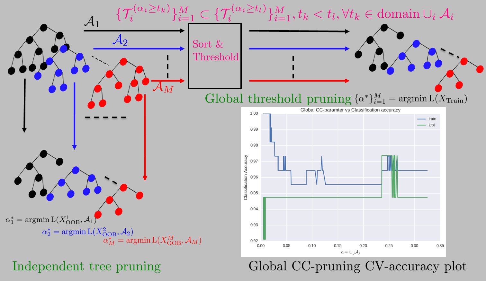

Cost-Compleixty Pruning with Out-of-Bag Samples
Cost-complexity pruning of random forests, B Ravi Kiran, J. Serra ISMM 2017 [pdf] [poster] [git]
We studied cost-complexity pruning of decision trees in bagged trees, random forest and extremely randomized trees. In our experiments we observe a reduction in the size of the forest which is dependent on the distribution of points in the dataset. ETs and RFs were shown to perform better than BTs, and were observed to provide a larger set of subtrees to cross-validate.Our study shows that the out-of-bag samples can be a possible candidate to set the cost-complexity parameter and thus an determine the best subtree for all DTs within ensemble. This combines the two ideas originally introduced by Breiman OOB estimates (1996) and bagging predictors (2001), while using the internal cross-validation OOB score of random forests to set the optimal cost-complexity parameters for each tree.

Figure shows the bagging procedure, OOB samples and its use for cost-complexity pruning on each decision tree in the ensemble. In the study we evaluate the optimal subtree by evaluating the cross-validation error over the OOB samples $Z_\text{OOB}^i := Z\setminus Z_i$ associated with each tree $i$. This reuses the randomized partitionining of data samples into insample and OOB samples provided by boostrap aggregation in random forests to post-prune the individual decision trees.

Random Forest pruning can be defined in two ways using the cost-complexity parameters of the individual decision trees. The goal is to obtain a optimal subforest by evaluating optimal values of $\alpha^{\ast}_j$ for $M$ different trees. We can do this in two ways
- Independent tree pruning : calculate the optimal subtree by finding the optimal cost-complexity parameter independently for each tree in the forest : \begin{equation} \mathcal{T}^\ast_j = \arg\min_{\alpha \in \mathcal{A}_j} \mathbb{E} \bigg[\| Y_\text{OOB} - \mathcal{T}_j^{(\alpha)}(X^j_\text{OOB}) \|^2\bigg] \end{equation} where $X^j_\text{OOB} = X_\text{train} \setminus X_j$, and $X_j$ being the samples used in the creation of tree $j$.
- Global threshold pruning : calculate the optimal subforest by pruning subtrees across the $M$ trees by following the global ordering of cost-complexity parameters. That is we sort $\cup_i \mathcal{A}_i$ and evaluate the CV-error for each $\alpha \in \text{SORT}(\cup_i \mathcal{A}_i)$ : \( \DeclareMathOperator*{\argmin}{arg\,min} \) \begin{equation} \{\mathcal{T}^\ast_j\}_{j=1}^M = \argmin_{\alpha \in \text{SORT}(\cup_j \mathcal{A}_j)} \mathbb{E} \bigg[\| Y_\text{train} - \frac{1}{M} \sum_{j=1}^M \mathcal{T}_j^{(\alpha)}(X^j_\text{OOB})\|^2 \bigg] \end{equation} where the cross-validation uses the out-of-bag prediction error as to evaluate the optimal $\{\alpha_j\}$ values. This basically considers a single threshold of cost-complexity parameters, which chooses a forest of subtrees for each threshold. The optimal threshold is calculated by cross-validating over the training set.
Non-monotonic training error : As we prune the forest globally, the forest's accuracy on training set does not monotonically descend (as in the case of a decision tree). As we prune the forest, we could have a set of trees that improve their prediction while the others degrade. This might be one of the reasons one observes spikes in the training error.
Forests [scikit-learn modules] :
- Bagged Trees (Bagging)
- Random Forests (Bagging + Random Feature selection)
- Extremely randomized trees(Bagging + Feature selection + random threshold selection).


Plot of the cost-complexity parameters for 100-tree ensemble for RFs, ETs and BTs. The distribution of $\mathcal{A}_j$ across trees $j$ shows BTs constitute of similar trees and thus contain similar cost complexity parameter values, while RFs and futhermore ETs have a larger range of parameter values, reflecting the known fact that these ensembles are further randomized. The consequence for pruning is that RFs and more so ETs produce subtrees of different depths, and achieve better prediction accuracy and size ratios as compared to BTs. This basically reflects the higher degree of randomization in RFs and ETs.
Reading List and resources
- Codes, Theorhetical understanding, Applications, Bibliography [git]
- Scikit-learn tree ensembles [link]
- Understanding Random Forests from Theory to Practice, Louppe G., 2014 [Thesis]
- Impact of subsampling and pruning on random forests, Duroux R., Scornet E. 2016 [pdf]
Cost-Complexity pruning
- Classification and Regression Trees 1984 L. Breiman, J. Friedman, C. J. Stone, R.A. Olshen
- Cost-Complexity Pruning : [Tutorial 1] [Tutorial 2]